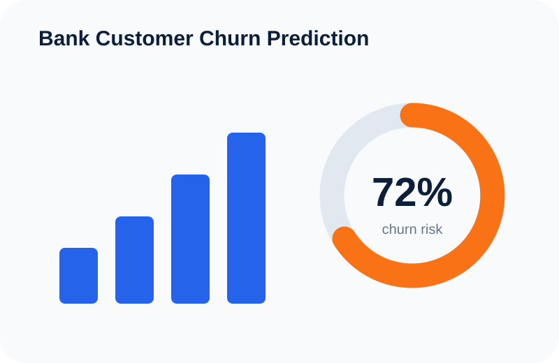
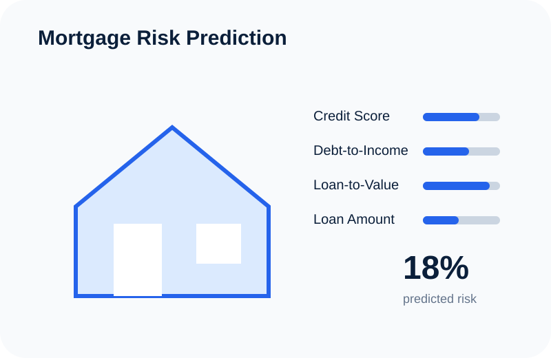
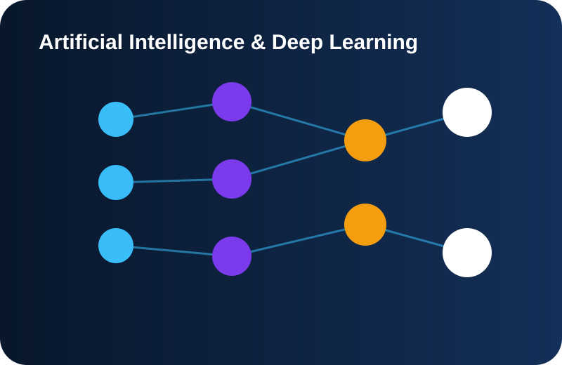
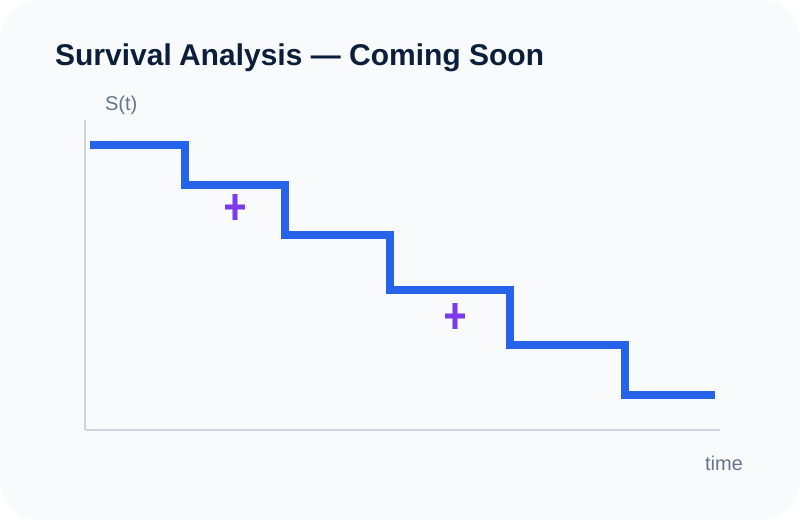

Completed
SVD Digit Denoising
Low-rank reconstruction of noisy handwritten digits using Singular Value Decomposition.
View project →Applied work in Data Science, Machine Learning, Statistics, Risk Modeling, Deep Learning and Mathematical Computing.
Low-rank reconstruction of noisy handwritten digits using Singular Value Decomposition.
View project →
Classification models for identifying customers with elevated churn risk.

Predictive modeling focused on patterns associated with mortgage credit risk.
View project →Classification modeling focused on identifying patterns associated with loan default.
Exploring predictive approaches to credit-risk assessment and borrower classification.
Regression modeling applied to residential property values and housing variables.

A structured introduction to tensors and the mathematical building blocks used in deep learning.

A visual and practical exploration of censoring, survival functions, hazards and Kaplan–Meier estimation.